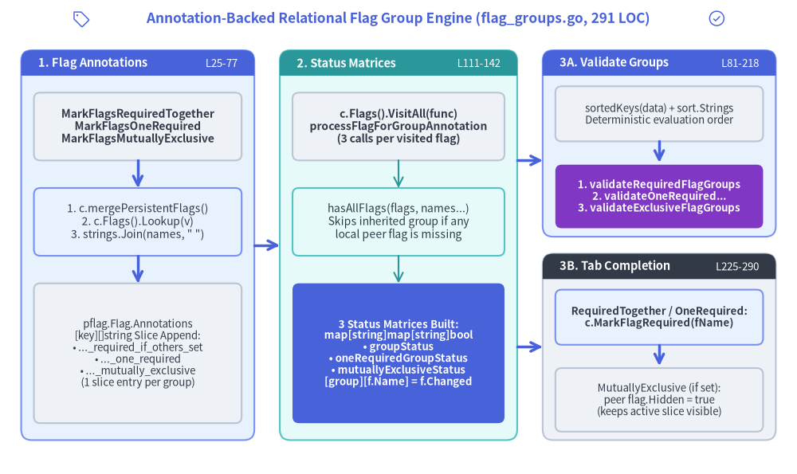
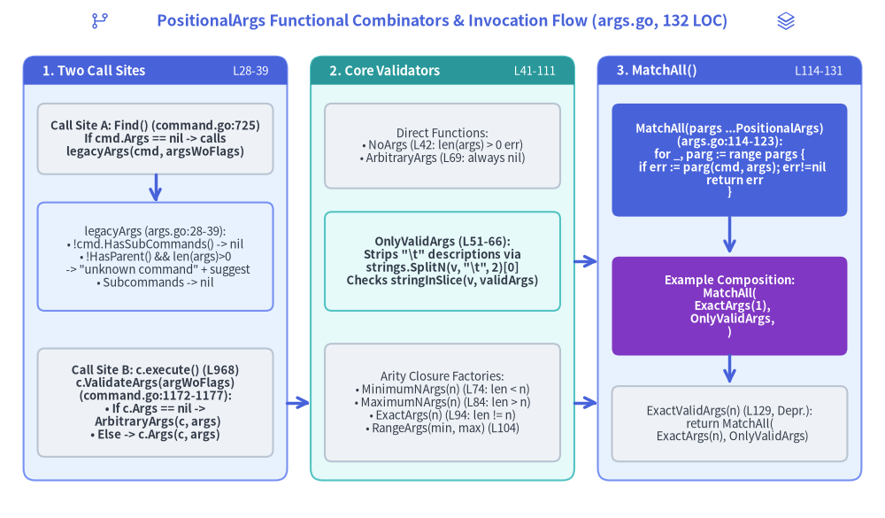

Chapter 4: Annotation-Backed Relational Flag Groups & PositionalArgs Combinators
While Chapter 1 examined how Command manages five lazy *pflag.FlagSet instances (flags, pflags, lflags, iflags, and parentsPflags) and Chapter 3 traced the six-stage execution pipeline in c.execute(), this chapter dissects the two validation engines sitting in Layer 3 of Cobra v1.10.2: the Annotation-Backed Relational Flag Group Engine (flag_groups.go, 291 LOC) and the PositionalArgs Functional Combinator Engine (args.go, 132 LOC). Together, these 423 lines of non-test Go code enforce multi-flag relational constraints (RequiredTogether, OneRequired, MutuallyExclusive), dynamically mutate flag visibility and requirement metadata during <TAB> shell completion, and provide composable positional argument validators.

Source Code
from drawlib.canvas import save, setup
from drawlib.icons import phosphor
from drawlib.lines import line
from drawlib.shapes import rectangle
from drawlib.smartarts import Panel
from drawlib.styles import Styles
from drawlib.text import text
setup(width=188, height=112)
phosphor.tag((19, 107.5), width=4.5, style=Styles.Primary)
text(
(94, 107.5),
"Annotation-Backed Relational Flag Group Engine (flag_groups.go, 291 LOC)",
style=Styles.PrimaryBold.patch(text_size=12.5),
)
phosphor.check_circle((169, 107.5), width=4.5, style=Styles.Primary)
# Panel 1: Registration & pflag.Flag.Annotations Storage
Panel(
"1. Flag Annotations",
"L25-77",
style=Styles.PrimaryNeutral,
header_style=Styles.PrimaryFlat,
text_style=Styles.WhiteBold.patch(text_size=10.5),
description_style=Styles.White.patch(text_size=9.5),
header_height=6.0,
).draw((5, 8), width=55, height=92)
rectangle(
(32.5, 82),
width=49,
height=16,
style=Styles.Neutral.patch(shape_r=1.5),
text="MarkFlagsRequiredTogether\nMarkFlagsOneRequired\nMarkFlagsMutuallyExclusive",
text_style=Styles.DarkBold.patch(text_size=10.0),
)
line((32.5, 74), (32.5, 67.5), arrow_head="->", style=Styles.PrimaryBold)
rectangle(
(32.5, 59.5),
width=49,
height=16,
style=Styles.PrimaryNeutral.patch(shape_r=1.5),
text="1. c.mergePersistentFlags()\n2. c.Flags().Lookup(v)\n3. strings.Join(names, \" \")",
text_style=Styles.Dark.patch(text_size=10.0),
)
line((32.5, 51.5), (32.5, 45), arrow_head="->", style=Styles.PrimaryBold)
rectangle(
(32.5, 28.5),
width=49,
height=33,
style=Styles.Neutral.patch(shape_r=1.5),
text="pflag.Flag.Annotations\n[key][]string Slice Append:\n• ..._required_if_others_set\n• ..._one_required\n• ..._mutually_exclusive\n(1 slice entry per group)",
text_style=Styles.Dark.patch(text_size=9.5),
)
# Panel 2: Status Matrix Builder
Panel(
"2. Status Matrices",
"L111-142",
style=Styles.SecondaryNeutral,
header_style=Styles.SecondaryFlat,
text_style=Styles.WhiteBold.patch(text_size=10.5),
description_style=Styles.White.patch(text_size=9.5),
header_height=6.0,
).draw((66, 8), width=56, height=92)
rectangle(
(94, 82),
width=50,
height=16,
style=Styles.Neutral.patch(shape_r=1.5),
text="c.Flags().VisitAll(func)\nprocessFlagForGroupAnnotation\n(3 calls per visited flag)",
text_style=Styles.DarkBold.patch(text_size=10.0),
)
line((94, 74), (94, 67.5), arrow_head="->", style=Styles.Secondary)
rectangle(
(94, 59.5),
width=50,
height=16,
style=Styles.SecondaryNeutral.patch(shape_r=1.5),
text="hasAllFlags(flags, names...)\nSkips inherited group if any\nlocal peer flag is missing",
text_style=Styles.Dark.patch(text_size=10.0),
)
line((94, 51.5), (94, 45), arrow_head="->", style=Styles.Secondary)
rectangle(
(94, 28.5),
width=50,
height=33,
style=Styles.PrimaryFlat.patch(shape_r=1.5),
text="3 Status Matrices Built:\nmap[string]map[string]bool\n• groupStatus\n• oneRequiredGroupStatus\n• mutuallyExclusiveStatus\n[group][f.Name] = f.Changed",
text_style=Styles.WhiteBold.patch(text_size=9.5),
)
# Panel 3A: ValidateFlagGroups() Execution Path
Panel(
"3A. Validate Groups",
"L81-218",
style=Styles.PrimaryNeutral,
header_style=Styles.PrimaryFlat,
text_style=Styles.WhiteBold.patch(text_size=10.5),
description_style=Styles.White.patch(text_size=9.5),
header_height=6.0,
).draw((128, 56), width=55, height=44)
rectangle(
(155.5, 85),
width=49,
height=13,
style=Styles.Neutral.patch(shape_r=1.5),
text="sortedKeys(data) + sort.Strings\nDeterministic evaluation order",
text_style=Styles.Dark.patch(text_size=9.5),
)
line((155.5, 78.5), (155.5, 73.5), arrow_head="->", style=Styles.PrimaryBold)
rectangle(
(155.5, 65.5),
width=49,
height=15,
style=Styles.AccentFlat.patch(shape_r=1.5),
text="1. validateRequiredFlagGroups\n2. validateOneRequired...\n3. validateExclusiveFlagGroups",
text_style=Styles.WhiteBold.patch(text_size=9.5),
)
# Panel 3B: enforceFlagGroupsForCompletion() Completion Path
Panel(
"3B. Tab Completion",
"L225-290",
style=Styles.Neutral,
header_style=Styles.DarkFlat,
text_style=Styles.WhiteBold.patch(text_size=10.5),
description_style=Styles.White.patch(text_size=9.5),
header_height=6.0,
).draw((128, 8), width=55, height=44)
rectangle(
(155.5, 37),
width=49,
height=13,
style=Styles.PrimaryNeutral.patch(shape_r=1.5),
text="RequiredTogether / OneRequired:\nc.MarkFlagRequired(fName)",
text_style=Styles.DarkBold.patch(text_size=9.5),
)
line((155.5, 30.5), (155.5, 25.5), arrow_head="->", style=Styles.PrimaryBold)
rectangle(
(155.5, 17.5),
width=49,
height=15,
style=Styles.Neutral.patch(shape_r=1.5),
text="MutuallyExclusive (if set):\npeer flag.Hidden = true\n(keeps active slice visible)",
text_style=Styles.Dark.patch(text_size=9.5),
)
# Inter-panel connectors
line((60, 54), (66, 54), arrow_head="->", style=Styles.PrimaryBold)
line((122, 74), (128, 74), arrow_head="->", style=Styles.PrimaryBold)
line((122, 30), (128, 30), arrow_head="->", style=Styles.PrimaryBold)
save()
1. Zero-Struct-Field Relational Flag Groups via pflag.Flag.Annotations
A notable architectural property of Cobra's relational flag group subsystem (flag_groups.go) is that it adds zero fields to the Command struct. Instead of maintaining separate group slices on Command and dealing with complex inheritance synchronization when persistent flags propagate down the command tree, Cobra stores relational group definitions directly inside each participating *pflag.Flag's Annotations map (map[string][]string).
1.1 The Three Internal Annotation Keys (flag_groups.go:25–29)
Cobra defines three unexported annotation key constants at the top of flag_groups.go:
const (
requiredAsGroupAnnotation = "cobra_annotation_required_if_others_set"
oneRequiredAnnotation = "cobra_annotation_one_required"
mutuallyExclusiveAnnotation = "cobra_annotation_mutually_exclusive"
)
| Registration Method | Source Lines | Annotation Key (pflag.Flag.Annotations) |
Relational Invariant |
|---|---|---|---|
c.MarkFlagsRequiredTogether(flagNames ...string) |
flag_groups.go:33–45 |
"cobra_annotation_required_if_others_set" |
All-or-none: if $\ge 1$ flag in the group is set (Changed == true), every flag in the group must be set. |
c.MarkFlagsOneRequired(flagNames ...string) |
flag_groups.go:49–61 |
"cobra_annotation_one_required" |
At-least-one: $\ge 1$ flag in the group must be set (Changed == true) on every invocation. |
c.MarkFlagsMutuallyExclusive(flagNames ...string) |
flag_groups.go:65–77 |
"cobra_annotation_mutually_exclusive" |
At-most-one: at most $1$ flag in the group may be set (len(set) <= 1). |
1.2 Registration Sequence & Multi-Group Slice Appending (flag_groups.go:33–77)
All three registration methods follow an identical 3-step protocol:
- Eager Persistent Flag Merge (
c.mergePersistentFlags()): Each method immediately invokesc.mergePersistentFlags()(flag_groups.go:34,L50,L66). As detailed in Chapter 1,mergePersistentFlags()ensures that both local flags (c.Flags()) and persistent flags defined oncor its ancestors (c.PersistentFlags(),c.parentsPflags) are merged intoc.flagsbefore lookup. This allows a single flag group to span inherited persistent flags and command-local flags seamlessly. - Existence Verification (
c.Flags().Lookup(v)): For each flag namevinflagNames, Cobra looks upf := c.Flags().Lookup(v). Iff == nil, Cobra panics immediately at registration time (flag_groups.go:37–39,L53–55,L69–71) with a descriptive message (e.g.,Failed to find flag "foo" and mark it as being required in a flag group), catching configuration typos during CLI initialization rather than at runtime. - Space-Delimited Group Serialization (
strings.Join(flagNames, " ")): Cobra serializes the entire group into a single space-delimited stringstrings.Join(flagNames, " ")and appends it to the existingf.Annotations[key]slice viac.Flags().SetAnnotation(...):
// flag_groups.go:65-77
func (c *Command) MarkFlagsMutuallyExclusive(flagNames ...string) {
c.mergePersistentFlags()
for _, v := range flagNames {
f := c.Flags().Lookup(v)
if f == nil {
panic(fmt.Sprintf("Failed to find flag %q and mark it as being in a mutually exclusive flag group", v))
}
// Each time this is called is a single new entry; this allows it to be a member of multiple groups if needed.
if err := c.Flags().SetAnnotation(v, mutuallyExclusiveAnnotation, append(f.Annotations[mutuallyExclusiveAnnotation], strings.Join(flagNames, " "))); err != nil {
panic(err)
}
}
}
Why Appending Slice Entries Enables Multi-Group Membership
Because pflag.Flag.Annotations has type map[string][]string, calling append(f.Annotations[key], strings.Join(flagNames, " ")) adds one slice element per registration call rather than overwriting the annotation or flattening all flags into a single list.
For example, if flag "a" is registered in two separate mutually exclusive pairs:
cmd.MarkFlagsMutuallyExclusive("a", "b")
cmd.MarkFlagsMutuallyExclusive("a", "c")
Then flagA.Annotations["cobra_annotation_mutually_exclusive"] holds the two-element slice []string{"a b", "a c"}. During validation, "a b" and "a c" become distinct keys in mutuallyExclusiveGroupStatus, permitting --b --c together while rejecting --a --b or --a --c. Furthermore, because *pflag.Flag pointers in pflags are copied into descendant FlagSets during mergePersistentFlags(), any annotation attached to a persistent flag automatically travels down the command tree without extra tree-walking logic.
2. Runtime Validation Engine: ValidateFlagGroups()
During c.execute() (command.go:1010–1012), immediately after PersistentPreRunE, PreRunE, and c.ValidateRequiredFlags() succeed—and right before c.RunE / c.Run executes—Cobra invokes c.ValidateFlagGroups(). Running validation after PreRunE is deliberate: it allows PersistentPreRunE or PreRunE hooks (such as Viper configuration loaders) to programmatically set flags or modify annotations before constraints are checked.
2.1 Status Matrix Construction via processFlagForGroupAnnotation (flag_groups.go:81–142)
If c.DisableFlagParsing is true, ValidateFlagGroups() returns nil immediately (L82–84). Otherwise, it initializes three two-level status maps of type map[string]map[string]bool, where the outer key is the space-delimited group identifier (e.g., "username password") and the inner map records flagName -> pflag.Changed:
// flag_groups.go:90-97
groupStatus := map[string]map[string]bool{}
oneRequiredGroupStatus := map[string]map[string]bool{}
mutuallyExclusiveGroupStatus := map[string]map[string]bool{}
flags.VisitAll(func(pflag *flag.Flag) {
processFlagForGroupAnnotation(flags, pflag, requiredAsGroupAnnotation, groupStatus)
processFlagForGroupAnnotation(flags, pflag, oneRequiredAnnotation, oneRequiredGroupStatus)
processFlagForGroupAnnotation(flags, pflag, mutuallyExclusiveAnnotation, mutuallyExclusiveGroupStatus)
})
For each flag in c.Flags(), processFlagForGroupAnnotation (flag_groups.go:121–142) inspects pflag.Annotations[annotation]:
// flag_groups.go:111-142
func hasAllFlags(fs *flag.FlagSet, flagnames ...string) bool {
for _, fname := range flagnames {
f := fs.Lookup(fname)
if f == nil {
return false
}
}
return true
}
func processFlagForGroupAnnotation(flags *flag.FlagSet, pflag *flag.Flag, annotation string, groupStatus map[string]map[string]bool) {
groupInfo, found := pflag.Annotations[annotation]
if found {
for _, group := range groupInfo {
if groupStatus[group] == nil {
flagnames := strings.Split(group, " ")
// Only consider this flag group at all if all the flags are defined.
if !hasAllFlags(flags, flagnames...) {
continue
}
groupStatus[group] = make(map[string]bool, len(flagnames))
for _, name := range flagnames {
groupStatus[group][name] = false
}
}
groupStatus[group][pflag.Name] = pflag.Changed
}
}
}
Why hasAllFlags(flags, flagnames...) Is Essential for Hybrid Persistent/Local Groups
Suppose a parent command defines a persistent flag --region and a local flag --zone, and calls parentCmd.MarkFlagsRequiredTogether("region", "zone"). Both --region and --zone receive the annotation "region zone".
When a subcommand childCmd executes:
childCmdinherits the persistent flag--region(along with its"region zone"annotation),childCmddoes not inheritparentCmd's local flag--zone.
When childCmd.ValidateFlagGroups() visits --region, processFlagForGroupAnnotation splits "region zone" and calls hasAllFlags(childCmd.Flags(), "region", "zone") (L129). Because childCmd.Flags().Lookup("zone") returns nil, hasAllFlags returns false, and the "region zone" group is cleanly skipped on childCmd (L129–131)! Only flag groups where all member flags exist on the target command's merged FlagSet are activated.
2.2 Deterministic Key Sorting & Three-Phase Validation (flag_groups.go:99–218)
Because Go randomizes map iteration order, iterating directly over map[string]map[string]bool would cause commands with multiple violated flag groups—or a single violated group with multiple missing/conflicting flags—to return non-deterministic error messages. Cobra eliminates this non-determinism in two places:
- Outer Group Ordering via
sortedKeys(data)(flag_groups.go:209–218): Extracts all group keys (flagList) into a slice and sorts them lexicographically viasort.Strings(keys). - Inner Flag Slice Sorting via
sort.Strings(...)(L160,L182,L203): Before formatting any error message, the slice ofunsetorsetflag names is sorted alphabetically.
ValidateFlagGroups() then evaluates the three group categories in strict sequence (L99–108):
| Phase | Helper Function | Lines | Validation Logic & Exact Error Format |
|---|---|---|---|
| 1. Required Together | validateRequiredFlagGroups(groupStatus) |
L144–165 |
Collects unset flags where !isSet. Valid if len(unset) == len(flagnameAndStatus) (none set) or len(unset) == 0 (all set). Otherwise sorts unset and returns:if any flags in the group [%v] are set they must all be set; missing %v |
| 2. One Required | validateOneRequiredFlagGroups(oneRequiredGroupStatus) |
L167–186 |
Collects set flags where isSet. Valid if len(set) >= 1. Otherwise returns:at least one of the flags in the group [%v] is required |
| 3. Mutually Exclusive | validateExclusiveFlagGroups(mutuallyExclusiveGroupStatus) |
L188–207 |
Collects set flags where isSet. Valid if len(set) == 0 || len(set) == 1. Otherwise sorts set and returns:if any flags in the group [%v] are set none of the others can be; %v were all set |
3. Dynamic Completion Adaptation: enforceFlagGroupsForCompletion()
Relational flag groups do not merely reject invalid invocations at execution time—they also drive intelligent <TAB> completion in getCompletions() (completions.go:430). Before generating flag completions, finalCmd.enforceFlagGroupsForCompletion() (flag_groups.go:225–290) builds the exact same three status matrices via processFlagForGroupAnnotation (L230–238) and mutates the in-memory pflag.Flag metadata on finalCmd so the standard completion engine automatically adapts its suggestions:
- Promoting Required-Together Peers (
flag_groups.go:242–251): If any flag in agroupStatusentry hasisSet == true, Cobra iterates overstrings.Split(flagList, " ")and calls_ = c.MarkFlagRequired(fName)(L247) on every flag in that group. BecausegetCompletions()prioritizes unfulfilled required flags viacompleteRequireFlags()(completions.go:440,528), setting one flag in a required-together group immediately promotes its unset partner flags to the top of the<TAB>suggestions. - Promoting Unsatisfied One-Required Groups (
flag_groups.go:255–271): For each group inoneRequiredGroupStatus, Cobra checks whether any member flag is already set (L258–262). If!isSet(none of the flags in the group have been typed on the command line yet), Cobra calls_ = c.MarkFlagRequired(fName)on all flags in the group (L266–270). Once the user supplies at least one flag from the group on the command line,isSetbecomestrueand the remaining flags in the group are no longer marked required. - Hiding Conflicting Mutually-Exclusive Peers (
flag_groups.go:275–289): When a flagflagNameinmutuallyExclusiveGroupStatusis set (isSet == true), Cobra loops over everyfNamein the group and hides all other flags (if fName != flagName { flag := c.Flags().Lookup(fName); flag.Hidden = true },L282–285).- Why
fName != flagNameIs Preserved: As the source comment atL279–280explains, Cobra intentionally does not setflag.Hidden = trueonflagNameitself (fName == flagName), becauseflagNamemight be a repeatableSliceorArrayflag (e.g.,--tag a --tag <TAB>) that must remain eligible for repeated completion!
- Why
4. PositionalArgs Functional Combinator Architecture (args.go)
Whereas flag_groups.go governs flags, args.go (132 LOC) governs positional arguments—the remaining non-flag tokens (argWoFlags := c.Flags().Args()) passed to a command. Cobra models positional argument validation as a first-class function type (args.go:22):
type PositionalArgs func(cmd *Command, args []string) error
Every Command struct holds an Args PositionalArgs field (command.go:112). This functional signature allows validators to be assigned directly (e.g., Args: cobra.NoArgs), parameterized via higher-order factory closures (e.g., Args: cobra.ExactArgs(2)), or composed arbitrarily with cobra.MatchAll(...).

Source Code
from drawlib.canvas import save, setup
from drawlib.icons import phosphor
from drawlib.lines import line
from drawlib.shapes import rectangle
from drawlib.smartarts import Panel
from drawlib.styles import Styles
from drawlib.text import text
setup(width=188, height=110)
phosphor.git_branch((21, 105.5), width=4.5, style=Styles.Primary)
text(
(94, 105.5),
"PositionalArgs Functional Combinators & Invocation Flow (args.go, 132 LOC)",
style=Styles.PrimaryBold.patch(text_size=12.5),
)
phosphor.stack((167, 105.5), width=4.5, style=Styles.Primary)
# Panel 1: Two Call Sites (Find vs execute) & legacyArgs
Panel(
"1. Two Call Sites",
"L28-39",
style=Styles.PrimaryNeutral,
header_style=Styles.PrimaryFlat,
text_style=Styles.WhiteBold.patch(text_size=10.5),
description_style=Styles.White.patch(text_size=9.5),
header_height=6.0,
).draw((5, 8), width=56, height=90)
rectangle(
(33, 80.5),
width=50,
height=15,
style=Styles.Neutral.patch(shape_r=1.5),
text="Call Site A: Find() (command.go:725)\nIf cmd.Args == nil -> calls\nlegacyArgs(cmd, argsWoFlags)",
text_style=Styles.DarkBold.patch(text_size=9.5),
)
line((33, 73), (33, 67), arrow_head="->", style=Styles.PrimaryBold)
rectangle(
(33, 55.5),
width=50,
height=23,
style=Styles.PrimaryNeutral.patch(shape_r=1.5),
text="legacyArgs (args.go:28-39):\n• !cmd.HasSubCommands() -> nil\n• !HasParent() && len(args)>0\n -> \"unknown command\" + suggest\n• Subcommands -> nil",
text_style=Styles.Dark.patch(text_size=9.5),
)
rectangle(
(33, 24.5),
width=50,
height=23,
style=Styles.Neutral.patch(shape_r=1.5),
text="Call Site B: c.execute() (L968)\nc.ValidateArgs(argWoFlags)\n(command.go:1172-1177):\n• If c.Args == nil ->\n ArbitraryArgs(c, args)\n• Else -> c.Args(c, args)",
text_style=Styles.DarkBold.patch(text_size=9.5),
)
# Panel 2: Built-In Validators & Closure Factories
Panel(
"2. Core Validators",
"L41-111",
style=Styles.SecondaryNeutral,
header_style=Styles.SecondaryFlat,
text_style=Styles.WhiteBold.patch(text_size=10.5),
description_style=Styles.White.patch(text_size=9.5),
header_height=6.0,
).draw((66, 8), width=56, height=90)
rectangle(
(94, 79),
width=50,
height=18,
style=Styles.Neutral.patch(shape_r=1.5),
text="Direct Functions:\n• NoArgs (L42: len(args) > 0 err)\n• ArbitraryArgs (L69: always nil)",
text_style=Styles.Dark.patch(text_size=9.5),
)
rectangle(
(94, 54.5),
width=50,
height=21,
style=Styles.SecondaryNeutral.patch(shape_r=1.5),
text="OnlyValidArgs (L51-66):\nStrips \"\\t\" descriptions via\nstrings.SplitN(v, \"\\t\", 2)[0]\nChecks stringInSlice(v, validArgs)",
text_style=Styles.DarkBold.patch(text_size=9.5),
)
rectangle(
(94, 24.5),
width=50,
height=25,
style=Styles.Neutral.patch(shape_r=1.5),
text="Arity Closure Factories:\n• MinimumNArgs(n) (L74: len < n)\n• MaximumNArgs(n) (L84: len > n)\n• ExactArgs(n) (L94: len != n)\n• RangeArgs(min, max) (L104)",
text_style=Styles.Dark.patch(text_size=9.5),
)
# Panel 3: MatchAll Combinator & Composition
Panel(
"3. MatchAll()",
"L114-131",
style=Styles.PrimaryNeutral,
header_style=Styles.PrimaryFlat,
text_style=Styles.WhiteBold.patch(text_size=10.5),
description_style=Styles.White.patch(text_size=9.5),
header_height=6.0,
).draw((127, 8), width=56, height=90)
rectangle(
(155, 76),
width=50,
height=24,
style=Styles.PrimaryFlat.patch(shape_r=1.5),
text="MatchAll(pargs ...PositionalArgs)\n(args.go:114-123):\nfor _, parg := range pargs {\n if err := parg(cmd, args); err!=nil\n return err\n}",
text_style=Styles.WhiteBold.patch(text_size=9.5),
)
line((155, 64), (155, 56), arrow_head="->", style=Styles.PrimaryBold)
rectangle(
(155, 45),
width=50,
height=21,
style=Styles.AccentFlat.patch(shape_r=1.5),
text="Example Composition:\nMatchAll(\n ExactArgs(1),\n OnlyValidArgs,\n)",
text_style=Styles.WhiteBold.patch(text_size=9.5),
)
line((155, 34.5), (155, 28.5), arrow_head="->", style=Styles.PrimaryBold)
rectangle(
(155, 20),
width=50,
height=16,
style=Styles.Neutral.patch(shape_r=1.5),
text="ExactValidArgs(n) (L129, Depr.):\nreturn MatchAll(\n ExactArgs(n), OnlyValidArgs)",
text_style=Styles.Dark.patch(text_size=9.5),
)
# Inter-panel arrows
line((61, 24.5), (66, 24.5), arrow_head="->", style=Styles.PrimaryBold)
line((122, 54.5), (127, 54.5), arrow_head="->", style=Styles.PrimaryBold)
line((122, 24.5), (127, 24.5), arrow_head="->", style=Styles.PrimaryBold)
save()
4.1 Why Positional Args Are Checked Twice: Find() (legacyArgs) vs execute() (ValidateArgs)
A subtle aspect of Cobra's architecture is that Command.Args participates in two distinct lifecycle phases:
-
During Target Command Resolution (
Find()incommand.go:724–727): WhenTraverseChildrenisfalse(the default) andFind()finishes stripping flags and descending the command tree, ifcommandFound.Args == nil,Find()invokeslegacyArgs(commandFound, argsWoFlags)(args.go:28–39):// args.go:28-39 func legacyArgs(cmd *Command, args []string) error { // no subcommand, always take args if !cmd.HasSubCommands() { return nil } // root command with subcommands, do subcommand checking. if !cmd.HasParent() && len(args) > 0 { return fmt.Errorf("unknown command %q for %q%s", args[0], cmd.CommandPath(), cmd.findSuggestions(args[0])) } return nil }Look closely at the three branches of
legacyArgs:- Leaf command (
!cmd.HasSubCommands()): Always accepts arbitrary positional arguments (return nil). - Root command that has subcommands (
!cmd.HasParent() && len(args) > 0): Rejects stray positional arguments as mistyped subcommand names, returning"unknown command %q for %q%s"along with Levenshtein-distance suggestions fromcmd.findSuggestions(args[0])! (This is also whyinitCompleteCmdandInitDefaultCompletionCmdcarefully remove__completeandcompletionwhen a root command has no other subcommands—otherwisecmd.HasSubCommands()would becometrueand break root commands that accept positional arguments.) - Non-root subcommand (
cmd.HasParent()): Always returnsnilifcmd.Args == nil.
- Leaf command (
-
During Command Execution (
c.execute()incommand.go:968->ValidateArgsincommand.go:1172–1177): Oncec.execute()parses flags and verifies the command is runnable, it callsc.ValidateArgs(argWoFlags)before runningPersistentPreRunEorPreRunE:// command.go:1172-1177 func (c *Command) ValidateArgs(args []string) error { if c.Args == nil { return ArbitraryArgs(c, args) } return c.Args(c, args) }If the user did not configure
c.Args,ValidateArgsfalls back toArbitraryArgs(c, args)(sinceFind()already ranlegacyArgsif needed).
4.2 Complete Catalog of Built-In PositionalArgs Validators (args.go:41–131)
Every validator in args.go is either a direct PositionalArgs function or a closure generator returning PositionalArgs:
| Validator / Combinator | Lines in args.go |
Signature | Exact Implementation & Error Behavior |
|---|---|---|---|
NoArgs |
L42–46 |
func(cmd *Command, args []string) error |
If len(args) > 0, returns fmt.Errorf("unknown command %q for %q", args[0], cmd.CommandPath()). |
OnlyValidArgs |
L51–66 |
func(cmd *Command, args []string) error |
No-op if len(cmd.ValidArgs) == 0. Otherwise strips optional <choice>\t<description> suffixes via strings.SplitN(v, "\t", 2)[0], checks each positional arg with stringInSlice(v, validArgs), and on mismatch returns fmt.Errorf("invalid argument %q for %q%s", v, cmd.CommandPath(), cmd.findSuggestions(args[0])). |
ArbitraryArgs |
L69–71 |
func(cmd *Command, args []string) error |
Unconditionally returns nil. |
MinimumNArgs(n int) |
L74–81 |
func(n int) PositionalArgs |
Returns closure: if len(args) < n, returns fmt.Errorf("requires at least %d arg(s), only received %d", n, len(args)). |
MaximumNArgs(n int) |
L84–91 |
func(n int) PositionalArgs |
Returns closure: if len(args) > n, returns fmt.Errorf("accepts at most %d arg(s), received %d", n, len(args)). |
ExactArgs(n int) |
L94–101 |
func(n int) PositionalArgs |
Returns closure: if len(args) != n, returns fmt.Errorf("accepts %d arg(s), received %d", n, len(args)). |
RangeArgs(min, max int) |
L104–111 |
func(min int, max int) PositionalArgs |
Returns closure: if len(args) < min || len(args) > max, returns fmt.Errorf("accepts between %d and %d arg(s), received %d", min, max, len(args)). |
MatchAll(pargs ...PositionalArgs) |
L114–123 |
func(pargs ...PositionalArgs) PositionalArgs |
Higher-order combinator that evaluates each parg(cmd, args) in slice order and short-circuits on the first non-nil error. |
ExactValidArgs(n int) |
L129–131 |
func(n int) PositionalArgs |
(Deprecated) Convenience alias implemented literally as return MatchAll(ExactArgs(n), OnlyValidArgs). |
4.3 Tab-Description Stripping in OnlyValidArgs (args.go:51–66)
Notice how OnlyValidArgs (args.go:51–66) harmonizes argument validation with the V2 Shell Completion engine (covered in Chapter 5):
// args.go:51-66
func OnlyValidArgs(cmd *Command, args []string) error {
if len(cmd.ValidArgs) > 0 {
// Remove any description that may be included in ValidArgs.
// A description is following a tab character.
validArgs := make([]string, 0, len(cmd.ValidArgs))
for _, v := range cmd.ValidArgs {
validArgs = append(validArgs, strings.SplitN(v, "\t", 2)[0])
}
for _, v := range args {
if !stringInSlice(v, validArgs) {
return fmt.Errorf("invalid argument %q for %q%s", v, cmd.CommandPath(), cmd.findSuggestions(args[0]))
}
}
}
return nil
}
Because cmd.ValidArgs entries can be authored using CompletionWithDesc("json", "Output in JSON format") (which produces "json\tOutput in JSON format"), OnlyValidArgs splits each entry on "\t" (strings.SplitN(v, "\t", 2)[0]) before comparing against the user's command-line arguments. This allows cmd.ValidArgs to serve simultaneously as the rich completion source with descriptions during <TAB> completion and the strict enum allowlist during ValidateArgs.
5. Summary & Next Steps
- Annotation-Backed Flag Groups (
flag_groups.go:25–77):MarkFlagsRequiredTogether,MarkFlagsOneRequired, andMarkFlagsMutuallyExclusivemerge persistent flags first and append space-delimited group strings intopflag.Flag.Annotations, supporting multi-group membership without adding struct fields toCommand. - Hybrid Inheritance Safety & Determinism (
flag_groups.go:81–218):processFlagForGroupAnnotationcheckshasAllFlags(flags, flagnames...)to ignore inherited persistent groups whose local peer flags are absent on a subcommand, whilesortedKeysandsort.Stringsguarantee deterministic error output. - Completion-Time Flag Mutation (
flag_groups.go:225–290):enforceFlagGroupsForCompletion()dynamically callsMarkFlagRequiredor setsflag.Hidden = trueon peer flags (fName != flagName) during__complete. - Composable
PositionalArgs(args.go:22–131):MatchAllcomposesExactArgs,MinimumNArgs,MaximumNArgs,RangeArgs, andOnlyValidArgs(with\tdescription stripping) into a single short-circuiting closure.
Continue to Chapter 5: Shell Completion V2 Engine — __complete Protocol & Shell Scripts to trace how initCompleteCmd, getCompletions(), checkIfFlagCompletion(), and the four shell script generators power cross-shell <TAB> completion.